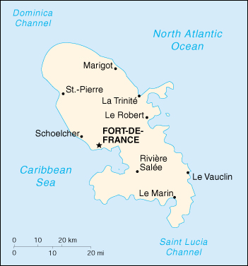

(overseas department of France)
|
Martinique (overseas department of France) |
|
| Introduction Geography People Government Economy Communications Transportation Military Transnational Issues | ||
|  | ||
| Martinique | Introduction | Top of Page |
| Background: | Colonized by France in 1635, the island has subsequently remained a French possession except for three brief periods of foreign occupation. |
| Martinique | Geography | Top of Page |
| Location: | Caribbean, island in the Caribbean Sea, north of Trinidad and Tobago |
| Geographic coordinates: | 14 40 N, 61 00 W |
| Map references: | Central America and the Caribbean |
| Area: |
total:
1,100 sq km
land: 1,060 sq km water: 40 sq km |
| Area - comparative: | slightly more than six times the size of Washington, DC |
| Land boundaries: | 0 km |
| Coastline: | 350 km |
| Maritime claims: |
exclusive economic zone:
200 NM
territorial sea: 12 NM |
| Climate: | tropical; moderated by trade winds; rainy season (June to October); vulnerable to devastating cyclones (hurricanes) every eight years on average; average temperature 17.3 degrees C; humid |
| Terrain: | mountainous with indented coastline; dormant volcano |
| Elevation extremes: |
lowest point:
Caribbean Sea 0 m
highest point: Montagne Pelee 1,397 m |
| Natural resources: | coastal scenery and beaches, cultivable land |
| Land use: |
arable land:
8%
permanent crops: 8% permanent pastures: 17% forests and woodland: 44% other: 23% (1993 est.) |
| Irrigated land: | 40 sq km (1993 est.) |
| Natural hazards: | hurricanes, flooding, and volcanic activity (an average of one major natural disaster every five years) |
| Environment - current issues: | NA |
| Martinique | People | Top of Page |
| Population: | 418,454 (July 2001 est.) |
| Age structure: |
0-14 years:
23.1% (male 49,016; female 47,653)
15-64 years: 66.77% (male 139,106; female 140,291) 65 years and over: 10.13% (male 18,893; female 23,495) (2001 est.) |
| Population growth rate: | 0.93% (2001 est.) |
| Birth rate: | 15.76 births/1,000 population (2001 est.) |
| Death rate: | 6.39 deaths/1,000 population (2001 est.) |
| Net migration rate: | -0.08 migrant(s)/1,000 population (2001 est.) |
| Sex ratio: |
at birth:
1.02 male(s)/female
under 15 years: 1.03 male(s)/female 15-64 years: 0.99 male(s)/female 65 years and over: 0.8 male(s)/female total population: 0.98 male(s)/female (2001 est.) |
| Infant mortality rate: | 7.8 deaths/1,000 live births (2001 est.) |
| Life expectancy at birth: |
total population:
78.41 years
male: 79.11 years female: 77.69 years (2001 est.) |
| Total fertility rate: | 1.8 children born/woman (2001 est.) |
| HIV/AIDS - adult prevalence rate: | NA% |
| HIV/AIDS - people living with HIV/AIDS: | NA |
| HIV/AIDS - deaths: | NA |
| Nationality: |
noun:
Martiniquais (singular and plural)
adjective: Martiniquais |
| Ethnic groups: | African and African-white-Indian mixture 90%, white 5%, East Indian, Chinese less than 5% |
| Religions: | Roman Catholic 95%, Hindu and pagan African 5% |
| Languages: | French, Creole patois |
| Literacy: |
definition:
age 15 and over can read and write
total population: 93% male: 92% female: 93% (1982 est.) |
| Martinique | Government | Top of Page |
| Country name: |
conventional long form:
Department of Martinique
conventional short form: Martinique local long form: Departement de la Martinique local short form: Martinique |
| Dependency status: | overseas department of France |
| Government type: | NA |
| Capital: | Fort-de-France |
| Administrative divisions: | none (overseas department of France) |
| Independence: | none (overseas department of France) |
| National holiday: | Bastille Day, 14 July (1789) |
| Constitution: | 28 September 1958 (French Constitution) |
| Legal system: | French legal system |
| Suffrage: | 18 years of age; universal |
| Executive branch: |
chief of state:
President Jacques CHIRAC of France (since 17 May 1995); Prefect Jean-Francois CORDET (since NA)
head of government: President of the General Council Claude LISE (since 22 March 1992); President of the Regional Council Alfred MARIE-JEANNE (since NA March 1998) cabinet: NA elections: French president elected by popular vote for a seven-year term; prefect appointed by the French president on the advice of the French Ministry of Interior; the presidents of the General and Regional Councils are elected by the members of those councils |
| Legislative branch: |
unicameral General Council or Conseil General (45 seats; members are elected by popular vote to serve six-year terms) and a unicameral Regional Assembly or Conseil Regional (41 seats; members are elected by popular vote to serve six-year terms)
elections: General Council - last held NA March 2000 (next to be held NA 2006); Regional Assembly - last held on 15 March 1998 (next to be held by March 2004) election results: General Council - percent of vote by party - NA%; seats by party - NA; note - the PPM won a plurality; Regional Assembly - percent of vote by party - NA%; seats by party - RPR-UDF 14, MIM 13, PPM 7, left parties 4, PMS 3 note: Martinique elects 2 seats to the French Senate; elections last held NA September 1998 (next to be held September 2001); results - percent of vote by party - NA%; seats by party - PPM 2; Martinique also elects 4 seats to the French National Assembly; elections last held 1 June 1997 (next to be held NA 2002); results - percent of vote by party - NA%; seats by party - RPR 2, PS 1, independent 1 |
| Judicial branch: | Court of Appeal or Cour d'Appel |
| Political parties and leaders: | Martinique Independence Movement or MIM [Alfred MARIE-JEANNE]; Martinique Progressive Party or PPM [Camille DARSIERES]; Martinique Socialist Party or PMS [Ernest WAN-AJOUHU]; Rally for the Republic or RPR [Michel CHARLONE]; Union for French Democracy or UDF (replaced by Martinique Forces of Progress) [Jean MAREN] |
| Political pressure groups and leaders: | Association for the Protection of Martinique's Heritage (ecologist) [Garcin MALSA]; Caribbean Revolutionary Alliance or ARC; Central Union for Martinique Workers or CSTM [Marc PULVAR]; Frantz Fanon Circle; League of Workers and Peasants; Proletarian Action Group or GAP; Socialist Revolution Group or GRS [Philippe PIERRE-CHARLES] |
| International organization participation: | FZ, WCL, WFTU |
| Diplomatic representation in the US: | none (overseas department of France) |
| Diplomatic representation from the US: | none (overseas department of France) |
| Flag description: | a light blue background is divided into four quadrants by a white cross; in the center of each rectangle is a white snake; the flag of France is used for official occasions |
| Martinique | Economy | Top of Page |
| Economy - overview: | The economy is based on sugarcane, bananas, tourism, and light industry. Agriculture accounts for about 6% of GDP and the small industrial sector for 11%. Sugar production has declined, with most of the sugarcane now used for the production of rum. Banana exports are increasing, going mostly to France. The bulk of meat, vegetable, and grain requirements must be imported, contributing to a chronic trade deficit that requires large annual transfers of aid from France. Tourism has become more important than agricultural exports as a source of foreign exchange. The majority of the work force is employed in the service sector and in administration. |
| GDP: | purchasing power parity - $4.39 billion (1997 est.) |
| GDP - real growth rate: | NA% |
| GDP - per capita: | purchasing power parity - $11,000 (1997 est.) |
| GDP - composition by sector: |
agriculture:
6%
industry: 11% services: 83% (1997 est.) |
| Population below poverty line: | NA% |
| Household income or consumption by percentage share: |
lowest 10%:
NA%
highest 10%: NA% |
| Inflation rate (consumer prices): | 3.9% (1990) |
| Labor force: | 170,000 (1997) |
| Labor force - by occupation: | agriculture 10%, industry 17%, services 73% (1997) |
| Unemployment rate: | 27.2% (1998) |
| Budget: |
revenues:
$900 million
expenditures: $2.5 billion, including capital expenditures of $140 million (1996) |
| Industries: | construction, rum, cement, oil refining, sugar, tourism |
| Industrial production growth rate: | NA% |
| Electricity - production: | 1.1 billion kWh (1999) |
| Electricity - production by source: |
fossil fuel:
100%
hydro: 0% nuclear: 0% other: 0% (1999) |
| Electricity - consumption: | 1.023 billion kWh (1999) |
| Electricity - exports: | 0 kWh (1999) |
| Electricity - imports: | 0 kWh (1999) |
| Agriculture - products: | pineapples, avocados, bananas, flowers, vegetables, sugarcane |
| Exports: | $250 million (f.o.b., 1997) |
| Exports - commodities: | refined petroleum products, bananas, rum, pineapples |
| Exports - partners: | France 45%, Guadeloupe 28% (1997) |
| Imports: | $2 billion (c.i.f., 1997) |
| Imports - commodities: | petroleum products, crude oil, foodstuffs, construction materials, vehicles, clothing and other consumer goods |
| Imports - partners: | France 62%, Venezuela 6%, Germany 4%, Italy 4%, US 3% (1997) |
| Debt - external: | $180 million (1994) |
| Economic aid - recipient: | $NA; note - substantial annual aid from France |
| Currency: | French franc (FRF); euro (EUR) |
| Currency code: | FRF; EUR |
| Exchange rates: | euros per US dollar - 1.0659 (January 2001), 1.0854 (2000), 0.9386 (1999); French francs per US dollar - 5.8995 (1998), 5.8367 (1997), 5.1155 (1996) |
| Fiscal year: | calendar year |
| Martinique | Communications | Top of Page |
| Telephones - main lines in use: | 170,000 (1997) |
| Telephones - mobile cellular: | 15,000 (1997) |
| Telephone system: |
general assessment:
domestic facilities are adequate
domestic: NA international: microwave radio relay to Guadeloupe, Dominica, and Saint Lucia; satellite earth stations - 2 Intelsat (Atlantic Ocean) |
| Radio broadcast stations: | AM 0, FM 14, shortwave 0 (1998) |
| Radios: | 82,000 (1997) |
| Television broadcast stations: | 11 (plus nine repeaters) (1997) |
| Televisions: | 66,000 (1997) |
| Internet country code: | .mq |
| Internet Service Providers (ISPs): | 2 (2000) |
| Internet users: | 5,000 (2000) |
| Martinique | Transportation | Top of Page |
| Railways: | 0 km |
| Highways: |
total:
2,105 km (2000)
paved: NA km unpaved: NA km |
| Waterways: | none |
| Ports and harbors: | Fort-de-France, La Trinite |
| Merchant marine: | none (2000 est.) |
| Airports: | 2 (2000 est.) |
| Airports - with paved runways: |
total:
1
over 3,047 m: 1 (2000 est.) |
| Airports - with unpaved runways: |
total:
1
under 914 m: 1 (2000 est.) |
| Martinique | Military | Top of Page |
| Military branches: | French forces (Army, Navy, Air Force), Gendarmerie |
| Military - note: | defense is the responsibility of France |
| Martinique | Transnational Issues | Top of Page |
| Disputes - international: | none |
| Illicit drugs: | transshipment point for cocaine and marijuana bound for the US and Europe |
{kind=link}
{kind=link}